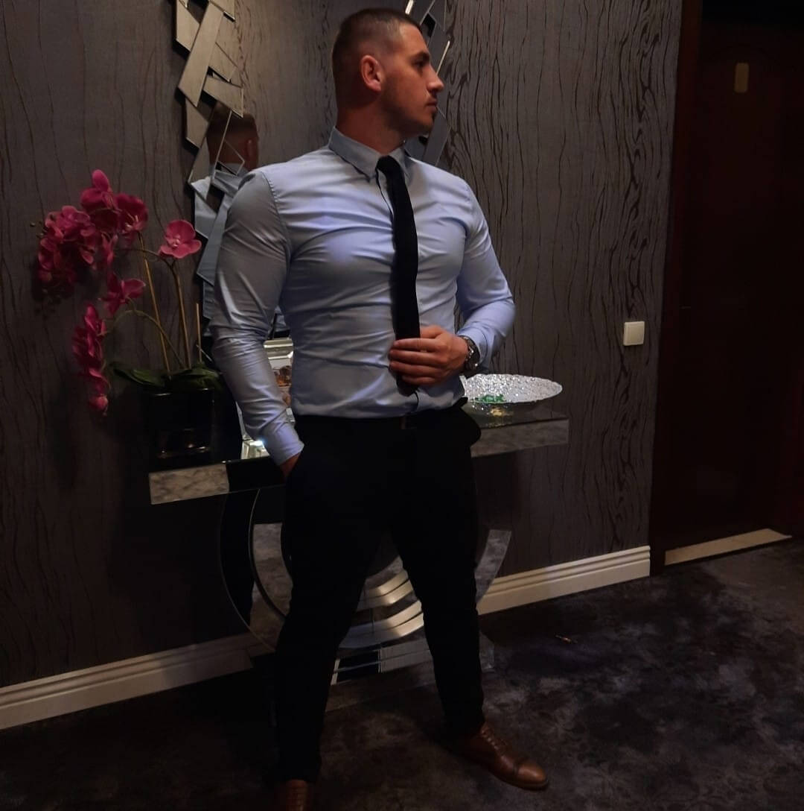

Hi!
My name is Blajan Razvan, I am 23 years old, I am Romanian and I am a person motivated, ambitious and persevering enough
to achieve my goals. I am the person who likes to get out of the comfort zone, because I know that area does not bring any
benefit and I am proud of that because that forces me to evolve.
In 5 years, and not only, I will be a very successful person,
working in a big company, doing what I like, sitting with the right people and growing every day.

About me
As I said, I am 23 years old, I am Romanian and I want to become a successful person.
I am hungry to grow, to develop, I am hungry to enrich my skills.
In the last year I have rediscovered myself and found my way in life.
I found that I like to learn, this fulfills me and makes me proud of myself.
I believe that when a person stops growing, that person is doomed to failure, and I do not accept being in that category.
I hate capping, I hate wasting my time, I don't want to be in an environment that doesn't force me to grow up,
I run away from such things and I think that this thing will bring me many benefits.
This would be a brief characterization of me. I hope I managed to arouse interest and I hope you will contact me to collaborate.


If I ever think I'm good enough, I have nothing to learn, or I feel like I'm high enough and
I should be content with what I have, I'll look at the stars
Every day I get out of bed and let the failure sleep for another hour
The people with whom you will become accustomed will create the environment in which your body will adapt with or without your will
Why me
From my point of view it is a pretty simple question due to the fact that I know why I am able.
Why me? For the simple fact that I am hungry for evolution, for performance.
I consider myself a serious, responsible, punctual man, eager to discover new things,
to constantly learn and to work as much as possible on myself and my mindset.
I consider that I have the necessary qualities and skills to work in the IT industry.
I don't consider myself a simple person, I don't want to go with the herd, I want to grow every day and fulfill my dream for which
I wake up early in the morning and go to bed late at night.
I am so mobilized to succeed that I can receive 1,000 refusals, I do not give up!!!
I seek success, I believe that anything is possible with a lot of work, dedication and perseverance and
I also consider that I demand these essential qualities.
I like to help people, this charges me and gives me the best mood.
Definitely if I were part of your company I would learn daily to be an important and basic person in your company.
I approach problems with the desire to solve them, I do not shy away from work, to learn new things, to be curious,
to get out of the comfort zone, because I know that this will help me in the long run and will make me getting better.
In conclusion, I think I would bring enough plus value to stimulate you to choose me in your team.
Feedback Vlad
Razvan is a very disciplined, punctual and responsible person.His likes to help people as much as possible.
I like the fact that he easily gets out of his comfort zone to get better.
I like his way of thinking and how he acts in different situations.
Feedback Marius
Being from the same city, I know Razvan for a very long time. I have a very good impression of him.
I know him as a devoted, motivated man, involved in the things he engages in.
I can say about him that he is responsible and what he promises he does.
He does not shy away from work and likes to grow up in terms of mindset.
Feedback Bogdan
Razvan is a reliable friend, he helps you every time you ask for his help. He likes to work extra to be successful in that area.
Knowing him closely, I believe that he will become a very successful person.